Main
Recepts
Addsomething
choose
Take Whatever You Want
Search
1.Adjaruli Khachapuri
As soon as it’s served, you have to swirl the ingredients together with your fork until the egg and butter are completely blended with the mass of cheese. Then tear a piece of the bread and dunk in!
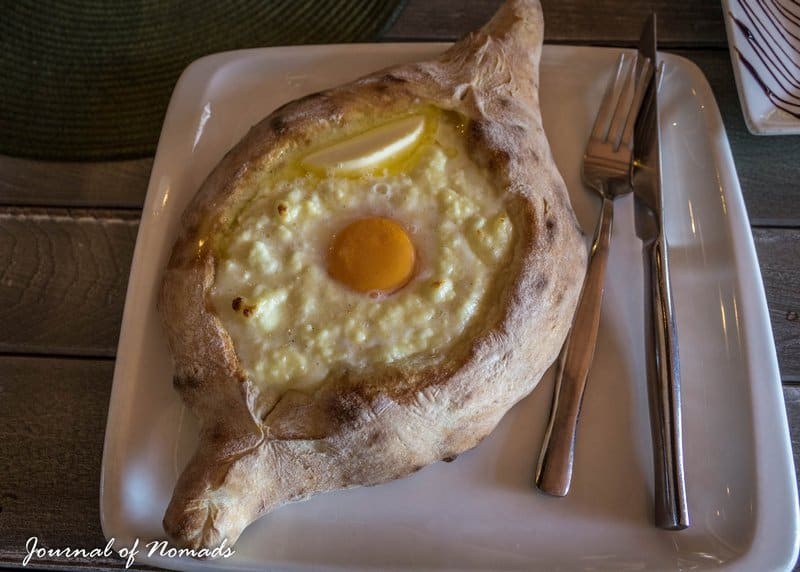
❤
2.KHINKALI
The proper way to eat them is to grab the dumpling from its topknot, turn it upside down and take a small bite from the side. Slurp out the juice first before eating the rest. This way you’ll be able to eat the khinkali without getting covered in meaty juices (talking out of experience). Don’t worry if you’re a vegetarian, they also serve khinkali with potato, cheese or mushroom fillings.
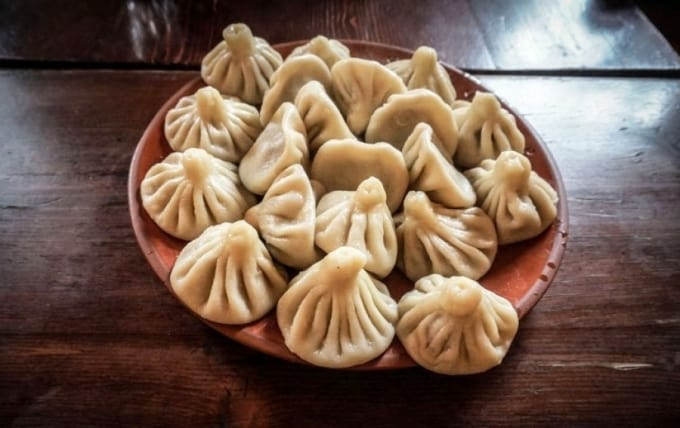
❤
3.Adjaruli Khachapuri
The first time I saw churchkhela, I thought it was some kind of decoration. Maybe people liked to hang colored sausages in the front windows of their stores? I later found out that it’s a traditional Georgian candy. The main ingredients are almonds, walnuts, hazelnuts or sometimes raisins that are threaded onto a string. The string is repeatedly dipped in concentrated fresh grape juice which dries into a chewy gelatin-like coating around the nuts. It’s packed with protein and sugar and it’s often served at home with coffee. A healthy candy for a sweet tooth like me!
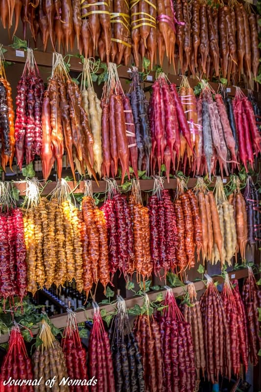
❤
4.BADRIJANI NIGVZIT
Badrijani Nigzvit is a Georgian food that consists of fried eggplant rolls with walnut (sometimes mixed with garlic) filling. I’m not a big eggplant fan but I love this dish! It tastes sweet and salty at the same time and it’s a dish I would definitely add to our usual spaghetti and egg fried rice meals on the road!
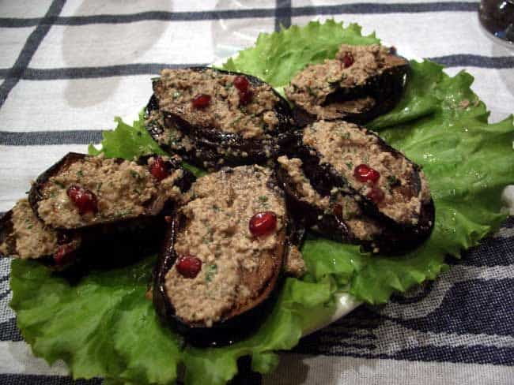
❤
5. KHACHAPURI
Khachapuri is one of the most popular and traditional Georgian dishes. It’s a gooey cheese-filled bread that looks a little like pizza. Rich in carbohydrates and dairy, it could cause a lot of trouble to lactose-intolerants but they might find the cramps worth it because it’s finger-licking delicious! There are three different kinds of khachapuri. The standard one is the Imeruli khachapuri.
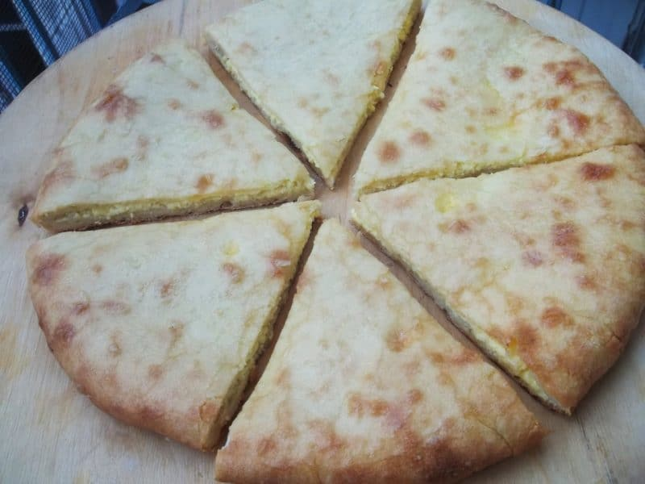
❤
6.LOBIO
Lobio (which means kidney beans in Georgian) is a mix of bean soup and various kinds of cooked or stewed beans. The taste of this Georgian dish varies depending on if it’s prepared with coriander, walnuts, garlic, or onion. There are many varieties of lobio, depending on the region you’re in. When we were living in Tbilisi, our landlady often knocked on our door to hand us a big bowl of lobio which we gratefully devoured!
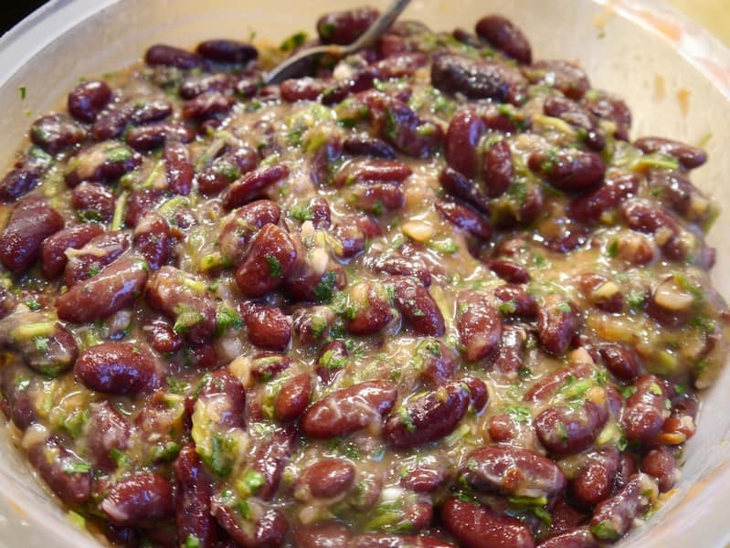
❤
7.LOBIANI
You might see the resemblance of the word Lobio with Lobiani. Lobiani is a bean-filled bread. It looks like an Imeruli khachapuri but with beans instead of cheese. It might sound like a weird combination but it’s super delicious! The bread is baked in a wood-fired oven and when you bite into it, you’ll first feel the crispy texture of the bread on your tongue but wait until you taste the spiced, bacon-scented beans! A real mouthgasm!
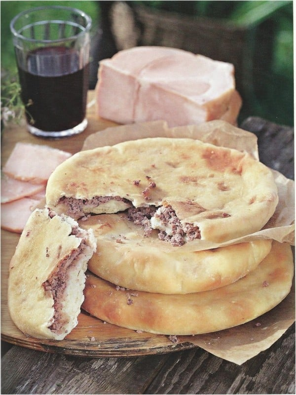
❤
8.MTSVADI
Mtsvadi, also called the dish of kings, is an extraordinary Georgian food. The preparation is a ritual on its own. Mtsvadi, made with chunks of pork, mutton or veal, is first abundantly marinated in pomegranate juice or rubbed in a good dose of salt before it’s threaded onto a skewer and roasted on an open fire. Warning: you’ll definitely be reaching for a few glasses of water (or wine) after eating this tender and juicy meat!
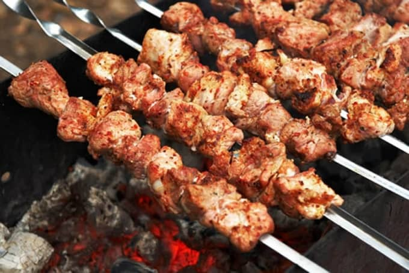
❤
9.SACIVI
Sacivi is a chicken dish served with a thick sauce containing onion, garlic, walnuts, spices and herbs. This Georgian dish must be prepared in advance and chilled for 24 hours before it is served. It has a particular taste, especially when some coriander is added, but definitely worth trying! I always loved to fill my plate with sacivi especially after eating a load of cheesy dishes.
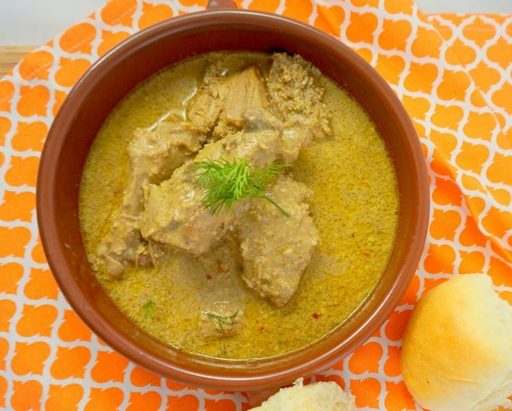
❤
10. KUCHMACHI
You better first taste kuchmachi and then know what it is made of… Well, I’m going to tell you anyway but promise you still give it a go. Kuchmachi is a traditional dish made with the heart, liver, kidneys, spleen and sometimes lungs of pigs, young beef or chicken. The one I ate had only liver in it. It’s often served with walnuts and garnished with pomegranate seeds. It might not sound so tasty but it’s definitely worth trying!
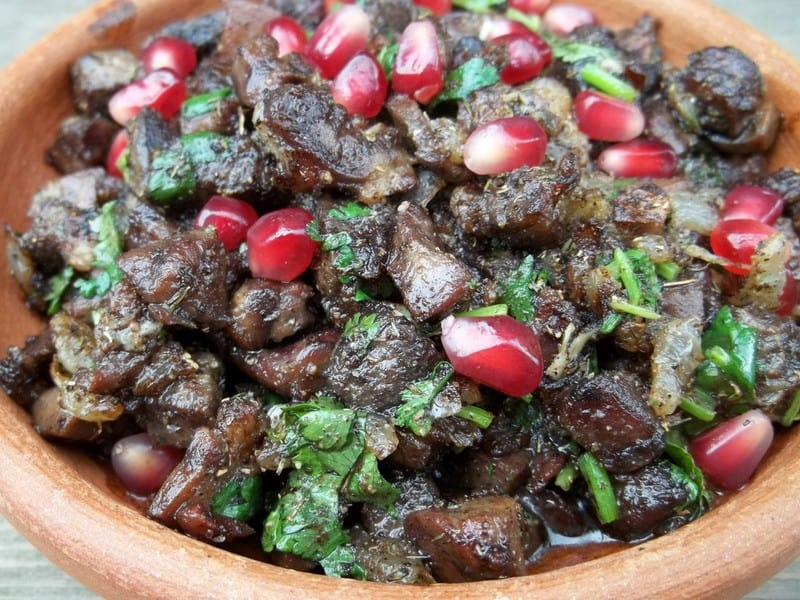
❤
11. KHARCHO
Kharcho is a traditional Georgian beef soup made with chopped walnuts, rice, cherry plum puree and often served with coriander. The soup has a spice mix that depends on the region of Georgia where it is prepared. It’s a hearty dish and definitely a good meal to have on a cold winter night (which they have often here in Georgia).
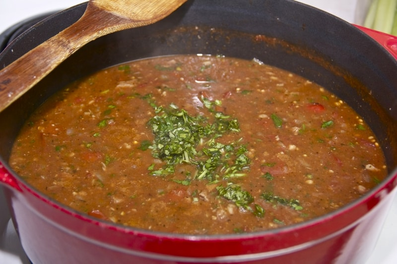
❤